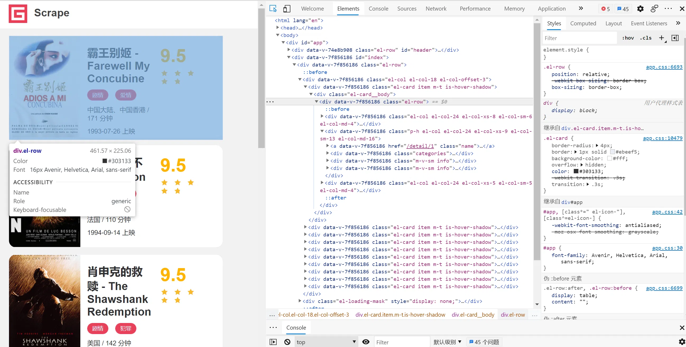
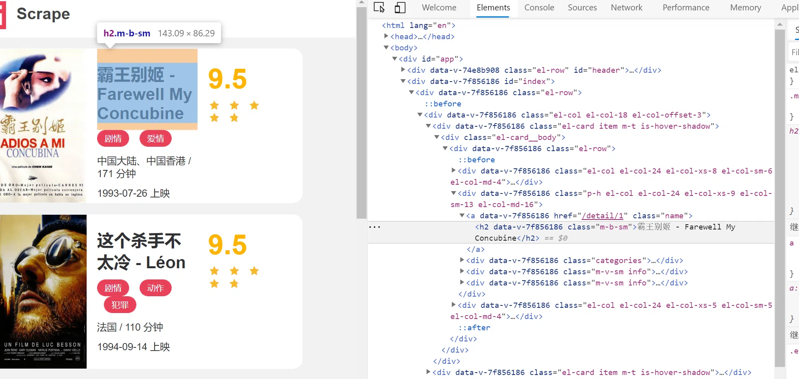
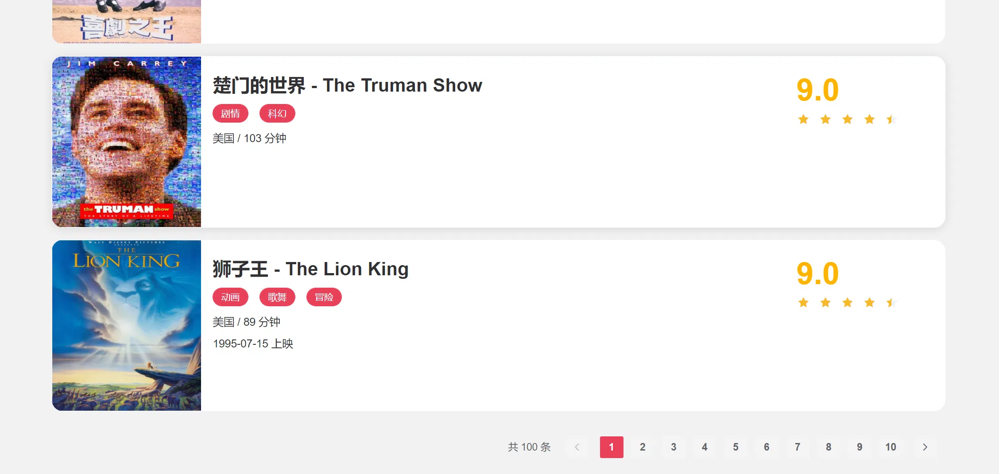
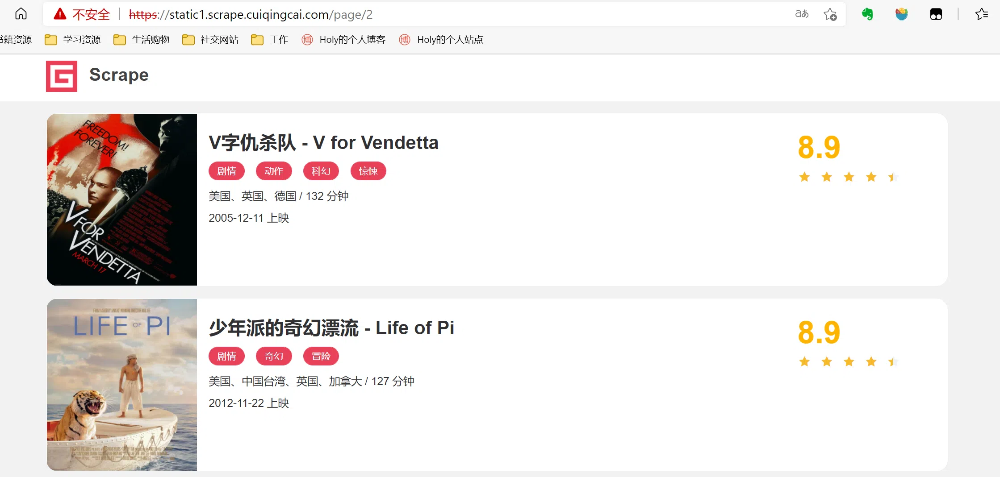
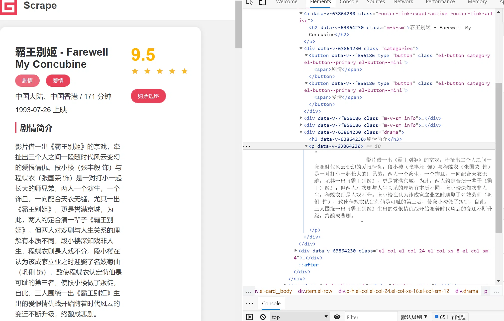

准备工作
在本节课开始之前，我们需要做好如下的准备工作：
- 安装好
Python3（最低为 3.6 版本），并能成功运行Python3程序。 - 了解
Python多进程的基本原理。 - 了解
PythonHTTP请求库requests的基本用法。 - 了解正则表达式的用法和
Python中正则表达式库re的基本用法。 - 了解
PythonHTML解析库pyquery的基本用法。 - 了解
MongoDB并安装和启动MongoDB服务。 - 了解
Python的MongoDB操作库PyMongo的基本用法。
爬虫目标
一个基本的静态网站作为案例进行爬取，需要爬取的链接为：https://static1.scrape.cuiqingcai.com/，这个网站里面包含了一些电影信息。
要完成的目标是：
- 用
requests爬取这个站点每一页的电影列表，顺着列表再爬取每个电影的详情页。 - 用
pyquery和正则表达式提取每部电影的名称、封面、类别、上映时间、评分、剧情简介等内容。 - 把以上爬取的内容存入
MongoDB数据库。 - 使用多进程实现爬取的加速。
爬取列表页
爬取的第一步肯定要从列表页入手，首先观察一下列表页的结构和翻页规则。在浏览器中访问，然后打开浏览器开发者工具，观察每一个电影信息区块对应的HTML，以及进入到详情页的URL是怎样的，如图所示：

每部电影对应的区块都是一个div节点，它的class属性都有el-card这个值。每个列表页有10个这样的div节点，也就对应着10部电影的信息。
再分析下从列表页是怎么进入到详情页的，选中电影的名称，看下结果：

这个名称实际上是一个h2节点，其内部的文字就是电影的标题。h2节点的外面包含了一个a节点，这个a节点带有href属性，这就是一个超链接，其中href的值为/detail/1，这是一个相对网站的根URLhttps://static1.scrape.cuiqingcai.com/路径，加上网站的根URL就构成了https://static1.scrape.cuiqingcai.com/detail/1，也就是这部电影详情页的URL。这样只需要提取这个href属性就能构造出详情页的URL并接着爬取了。
接下来分析下翻页的逻辑，拉到页面的最下方，可以看到分页页码，如图所示：

页面显示一共有100条数据，10页的内容，因此页码最多是10。接着我们点击第2页，如图所示：

可以看到网页的URL变成了https://static1.scrape.cuiqingcai.com/page/2，相比根URL多了/page/2这部分内容。网页的结构还是和原来一模一样，所以我们可以和第1页一样处理。
接着查看第3页、第4页等内容，可以发现有这么一个规律，每一页的URL最后分别变成了/page/3、/page/4。所以，/page后面跟的就是列表页的页码，当然第1页也是一样，在根URL后面加上/page/1也是能访问的，只不过网站做了一下处理，默认的页码是1，所以显示第1页的内容。
分析到这里，逻辑基本就清晰了。
如果要完成列表页的爬取，可以这么实现：
- 遍历页码构造
10页的索引页URL。 - 从每个索引页分析提取出每个电影的详情页
URL。
先定义一些基础的变量，并引入一些必要的库，写法如下：
1 | import requests |
引入requests用来爬取页面，logging用来输出信息，re用来实现正则表达式解析，pyquery用来直接解析网页，pymongo用来实现MongoDB存储，urljoin用来做URL的拼接。
接着定义日志输出级别和输出格式，完成之后再定义BASE_URL为当前站点的根URL，TOTAL_PAGE为需要爬取的总页码数量。
定义好了之后，来实现一个页面爬取的方法，实现如下：
1 | def scrape_page(url): |
考虑到不仅要爬取列表页，还要爬取详情页，在这里定义一个较通用的爬取页面的方法，叫作scrape_page，它接收一个url参数，返回页面的html代码。
首先判断状态码是不是200，如果是，则直接返回页面的HTML代码，如果不是，则会输出错误日志信息。另外，这里实现了requests的异常处理，如果出现了爬取异常，则会输出对应的错误日志信息。这时将logging的error方法的exc_info参数设置为True则可以打印出Traceback错误堆栈信息。
有了scrape_page方法之后，给这个方法传入一个url，正常情况下它就可以返回页面的HTML代码。
在这个基础上，来定义列表页的爬取方法吧，实现如下：
1 | def scrape_index(page): |
方法名称叫作scrape_index，这个方法会接收一个page参数，即列表页的页码，在方法里面实现列表页的URL拼接，然后调用scrape_page方法爬取即可得到列表页的HTML代码了。
获取了HTML代码后，下一步就是解析列表页，并得到每部电影的详情页的URL了，实现如下：
1 | def parse_index(html): |
这里我们定义了parse_index方法，它接收一个html参数，即列表页的HTML代码。接着用pyquery新建一个PyQuery对象，完成之后再用.el-card .name选择器选出来每个电影名称对应的超链接节点。遍历这些节点，通过调用attr方法并传入href获得详情页的URL路径，得到的href就是上文所说的类似/detail/1这样的结果。这并不是一个完整的URL，所以需要借助urljoin方法把BASE_URL和href拼接起来，获得详情页的完整URL，得到的结果就是类似https://static1.scrape.cuiqingcai.com/detail/1这样完整的URL了，最后yield返回即可。
通过调用parse_index方法传入列表页的HTML代码就可以获得该列表页所有电影的详情页URL了，接下来把上面的方法串联调用一下，实现如下：
1 | def main(): |
定义了main方法来完成上面所有方法的调用，首先使用range方法遍历一下页码，得到的page是1~10，接着把page变量传给scrape_index方法，得到列表页的HTML，赋值为index_html变量。接下来再将index_html变量传给parse_index方法，得到列表页所有电影的详情页URL，赋值为detail_urls，结果是一个生成器，调用list方法就可以将其输出出来。
1 | 2021-05-23 23:23:04,059 - INFO: get detail info https://static1.scrape.cuiqingcai.com/detail/1 |
由于输出内容比较多，这里只贴了一部分。可以看到，在这个过程中程序首先爬取了第1页列表页，然后得到了对应详情页的每个URL，接着再接着爬第2页、第3页，一直到第10页，依次输出了每一页的详情页URL。这样，就成功获取到所有电影详情页URL。
爬取详情页
首先观察一下详情页的HTML代码，如图所示：

经过分析，要提取的内容和对应的节点信息如下：
- 封面：是一个
img节点，其class属性为cover。 - 名称：是一个
h2节点，其内容便是名称。 - 类别：是
span节点，其内容便是类别 - 内容，其外侧是
button节点，再外侧则是class为categories的div节点。 - 上映时间：是
span节点，其内容包含了上映时间，其外侧是包含了class为info的div节点。但注意这个div前面还有一个class为info的div节点，可以使用其内容来区分，也可以使用nth-child或nth- of-type这样的选择器来区分。另外提取结果中还多了「上映」二字，可以用正则表达式把日期提取出来。 - 评分：是一个
p节点，其内容便是评分，p节点的class属性为score。 - 剧情简介：是一个
p节点，其内容便是 - 剧情简介，其外侧是
class为drama的div节点。
刚才已经成功获取了详情页的URL，接下来要定义一个详情页的爬取方法，实现如下：
1 | def scrape_detail(url): |
未完待续。。。20210523